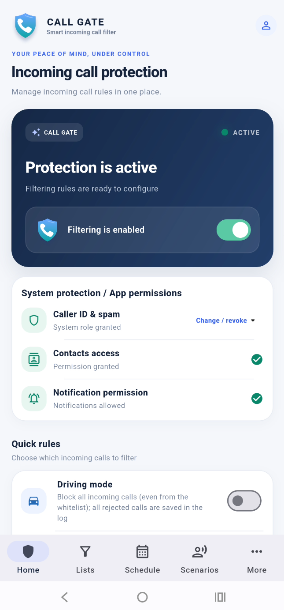
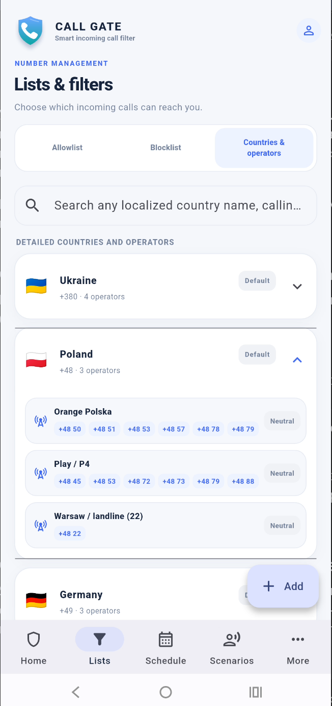
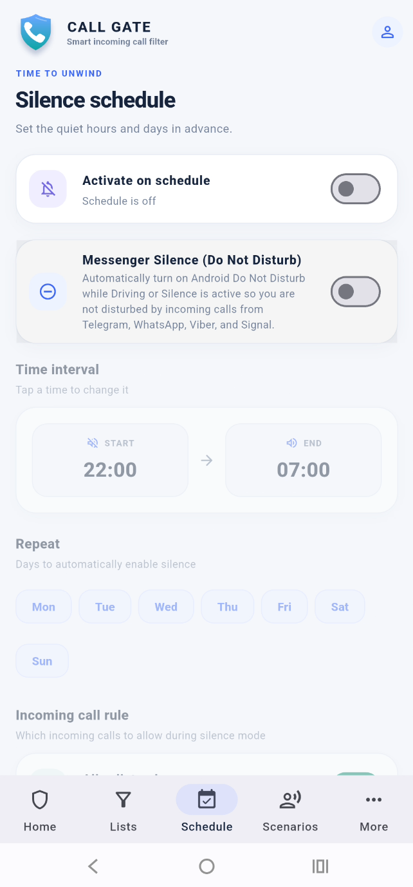
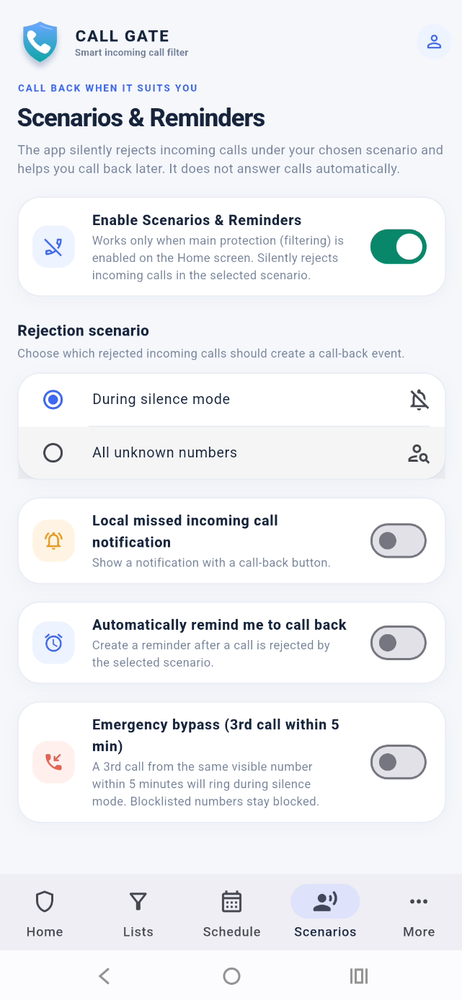

Гнучкі правила
Додавайте номери в білий і чорний списки назавжди або на певний час. Блокуйте приховані номери й виклики не з контактів.
Call Gate блокує небажані дзвінки за вашими правилами. Налаштуйте списки й розклад тиші, а контакти залишаться на телефоні.
Можливості
Дозволяйте важливі виклики й налаштовуйте фільтри під свій день.
Додавайте номери в білий і чорний списки назавжди або на певний час. Блокуйте приховані номери й виклики не з контактів.
Задайте години та дні, увімкніть тишу вручну або залиште доступними лише номери з білого списку.
Налаштуйте міжнародні виклики та префікси країн і операторів. Блокуйте короткі номери з 2–6 цифр із винятками для контактів і білого списку.
У тиші можна дозволити третій дзвінок за 5 хвилин із того самого відкритого номера. Номери, які явно заблоковано, залишаються заблокованими.
Відхиляйте вхідні виклики, навіть із білого списку. Керуйте водінням і захистом зі шторки сповіщень.
Переглядайте журнал блокувань, налаштовуйте тихе відхилення й отримуйте нагадування передзвонити, коли зручно.
Ви можете в CallGate обрати системний режим «Не турбувати» під час режимів «За кермом» або «Тиша», приглушуючи дзвінки та сповіщення месенджерів.
Симулятор
Спробуйте готовий сценарій або введіть номер. Демо використовує приклад правил і працює в браузері.
Тут з’явиться рішення фільтра та його причина.
Приватність
Call Gate фільтрує виклики на пристрої через системну службу Android. Правила, контакти й журнал не передаються на сервер.
Довідник
Швидко увімкніть Call Gate, а потім відкрийте потрібне вікно довідника.

Завантажте CallGate-2.6.1.apk на Android 10+ і дозвольте встановлення з цього джерела.

Призначте Call Gate застосунком за замовчуванням для АОН і спаму, щоб активувати CallScreeningService.

У налаштуваннях батареї вимкніть оптимізацію для Call Gate, щоб фільтрація спрацьовувала миттєво.

Надайте доступ до «Не турбувати», щоб синхронізувати тишу для Telegram, WhatsApp, Viber і Signal.
Довідник функцій
Відкрийте групу, щоб побачити призначення функцій і спосіб їх застосування.
Головний перемикач захисту — вмикає або призупиняє фільтрацію всіх вхідних дзвінків. Увімкніть його після надання системної ролі.
«За кермом» — відхиляє вхідні дзвінки, навіть із білого списку. Увімкніть режим перед поїздкою.
«Режим тиші» — застосовує активний сценарій тиші до дзвінків. Увімкніть його вручну або скористайтеся розкладом.
«Тиша в месенджерах» — синхронізує CallGate із системним режимом «Не турбувати» для Telegram, WhatsApp, Viber і Signal. Надайте доступ до політики сповіщень.
«Тестовий виклик» — симулює номер за поточними правилами без реального дзвінка. Введіть номер і перевірте причину рішення.
Білий список — завжди дозволяє важливі номери; тимчасове правило діє до вказаної дати, після чого видаляється автоматично.
Чорний список — явно блокує номери та має пріоритет над загальними дозволами.
Блокування невідомих і прихованих номерів відхиляє виклики без доступного номера або без контакту, якщо перемикач увімкнено.
Короткі сервісні номери з 2–6 цифр оцінюються окремо; екстрені коди та дозволені контакти залишаються винятками.
Міжнародне правило блокує виклики з іноземними кодами, якщо вони не дозволені списком.
Правила країн та операторів фільтрують виклики за кодом країни й префіксом оператора. Виберіть дію біля потрібної країни або оператора.
Розклад автоматичної тиші вмикає режим у вибрані дні та години, наприклад з 22:00 до 07:00. Увімкніть розклад і позначте дні повторення.
Автосинхронізація з месенджерами застосовує системний режим «Не турбувати» на час тиші. Дозвольте політику сповіщень, щоб Telegram, WhatsApp, Viber і Signal не дзвонили.
Екстрений прорив дозволяє третій дзвінок за 5 хвилин із того самого видимого номера після двох відхилень у тиші. Явно заблоковані номери не прориваються.
Нагадування передзвонити створює локальну подію після відхиленого виклику. Увімкніть сповіщення та виберіть сценарій нагадування.
Сценарії працюють лише разом із головним перемикачем захисту секції. Спочатку увімкніть захист на «Головній».
Журнал показує причину кожного рішення — блокування або дозволу — та час виклику. Відкрийте «Журнал» у вікні «Більше».
Правила, контакти й журнал зберігаються 100% локально в SQLite на телефоні. Немає акаунта, хмарної синхронізації чи телеметрії.
Так. Фільтрація, правила, контакти й журнал працюють без інтернету. З’єднання потрібне лише для завантаження APK або оновлень.
Контакти потрібні, щоб розрізняти знайомі та невідомі номери. Журнал викликів допомагає імпортувати номер у правило; дані не залишають пристрій.
Системний режим «Не турбувати» може приховати або приглушити сповіщення, але не скасовує подію виклику в самому месенджері. Після завершення тиші застосунок може показати пропущений виклик.
Перевірте доступ CallGate до системного режиму «Не турбувати», дозвольте сповіщення месенджера та вимкніть для нього власні винятки. Поведінка також залежить від оболонки виробника.
Так. Коди 101–104, 112, 911 і 999 мають безумовний пріоритет і проходять фільтр незалежно від інших правил.
Після двох відхилень у режимі тиші третій виклик за 5 хвилин із того самого видимого номера може пройти. Номер із чорного списку не проривається.
Вимкніть оптимізацію батареї для CallGate і дозвольте фонову активність. На Samsung це може бути «Без обмежень», а на Xiaomi також вимкніть автозапуск і блокування фонового режиму.
Так, застосунок безкоштовний, без реклами та телеметрії. Вихідний код відкритий на GitHub під ліцензією MIT.
Встановіть Call Gate і налаштуйте блокування під себе.
Якщо застосунок допомагає вам берегти спокій і час, ви можете пригостити розробника кавою.